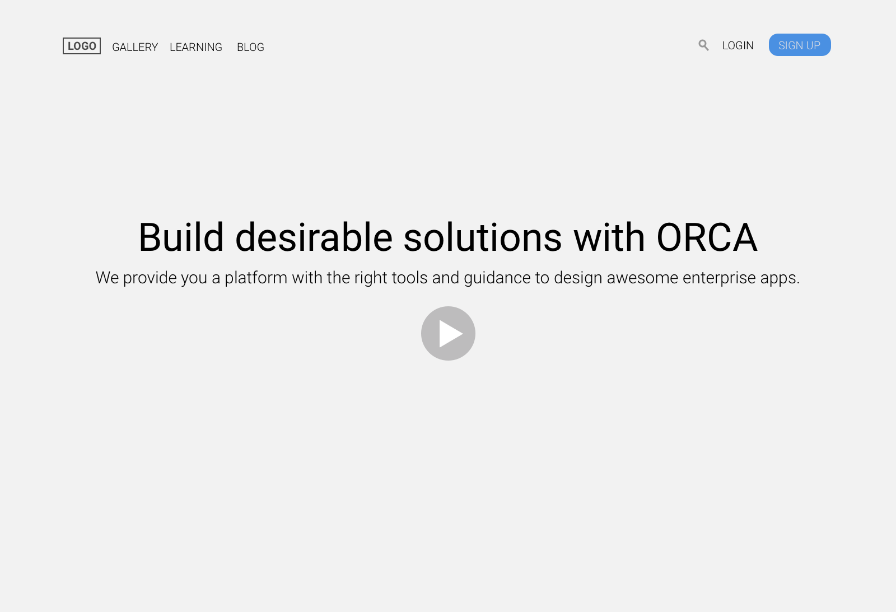

01. Figuring out the correct order of presenting the different facets of the product.
Which meant:
- Truly understanding who the user is.

Understanding who the primary users are 
Developing User Journeys Developing Scenarios and finding pain points 
Defining Personas
- Brainstorming different layouts...

and proposing them at a higher fidelity.
- Truly understanding who the user is.
- Brainstorming different layouts...
and proposing them at a higher fidelity.

02. Designing interactions and mock-ups at varying fidelities.
Important quesions considered when designing:
- Would it be an overlayed popup or a new page?
- What would zero-states look like?
- What confirmation would users get when making a change?
- How do we distinguish what is mandatory versus what is optional?
- All of this came in to play when designing this component.
- Would it be an overlayed popup or a new page?
- What would zero-states look like?
- What confirmation would users get when making a change?
- How do we distinguish what is mandatory versus what is optional?
- All of this came in to play when designing this component.


03. Putting it all together for research and gathering feedback.
At the end of each week, I created an Invision prototype with the latests designs and interactions.
User testing was conducted using these prototypes.
User testing was conducted using these prototypes.